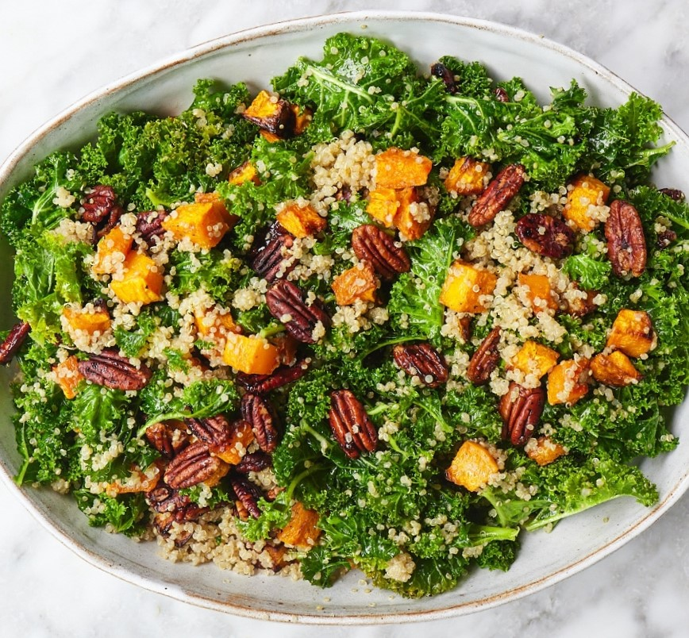

приготовление:
-
Разогреть духовку до 190 °C или до 170 °C в режиме с вентилятором.
-
250 г тыквы (butternut squash) очистить и нарезать удобными для еды кусочками. Выложить на противень, сбрызнуть оливковым маслом, посолить и поперчить. Перемешать и запекать 35 минут, пока тыква не станет мягкой и не подрумянится по краям.
-
В отдельную небольшую форму выложить 100 г орехов пекан, добавить 1 ст. л. оливкового масла, 1 ст. л. соуса тамари и 1 ст. л. кленового сиропа. Перемешать, поставить в духовку рядом с тыквой и запекать ещё 10–12 минут, пока орехи не подрумянятся.
-
Пока тыква и орехи запекаются, промыть 2 мерные чашки киноа по 100 мл. Залить водой в пропорции 1:2, посолить и варить под крышкой 15 минут.
-
У 100–120 г кейла удалить жёсткие стебли. Листья промыть, обсушить и нарезать удобными для еды кусочками. Добавить 1 ст. л. оливкового масла, 1 ст. л. кленового сиропа, 2 ч. л. горчицы и 1 ст. л. яблочного уксуса. Чистыми руками массировать кейл 1–2 минуты, пока листья не уменьшатся в объёме и не станут мягкими.
-
Готовую киноа, тыкву, орехи и кейл соединить в большой миске. Перемешать и при необходимости добавить соль и перец.